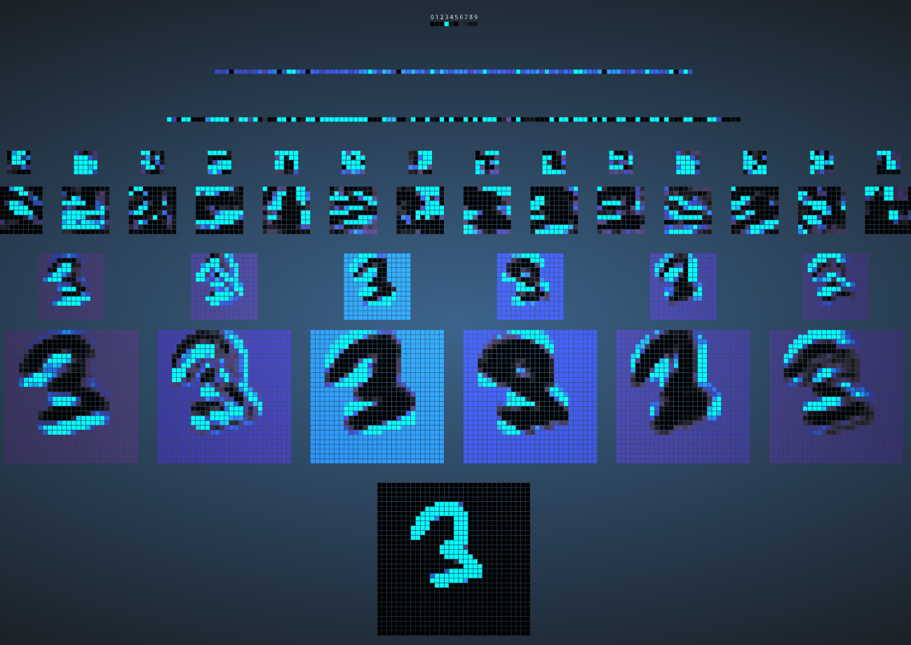

Visuelle Erkundung von "CNNs"
Öffne die externe Seite zur 2D-Visualisierung oder 3D-Visualisierung des CNNs

Zeichne eine beliebige Ziffer in das Eingabefeld. und untersuche die Ausgabe des Netzwerks Schicht für Schicht. Entwickle ein Gespür dafür,
wie CNNs eine hierarchische Abstraktion von der Eingabe bis zur Ausgabe durchführen.
Ordne die Schichten den passenden Stellen im Bild zu.



FC-Schicht (120)
Conv-Schicht (16 Filter)
2.Max-Pooling-Schicht
Eingabeschicht
FC-Schicht (100)
Conv-Schicht (6 Filter)
1.Max-Pooling-Schicht
Ausgabeschicht